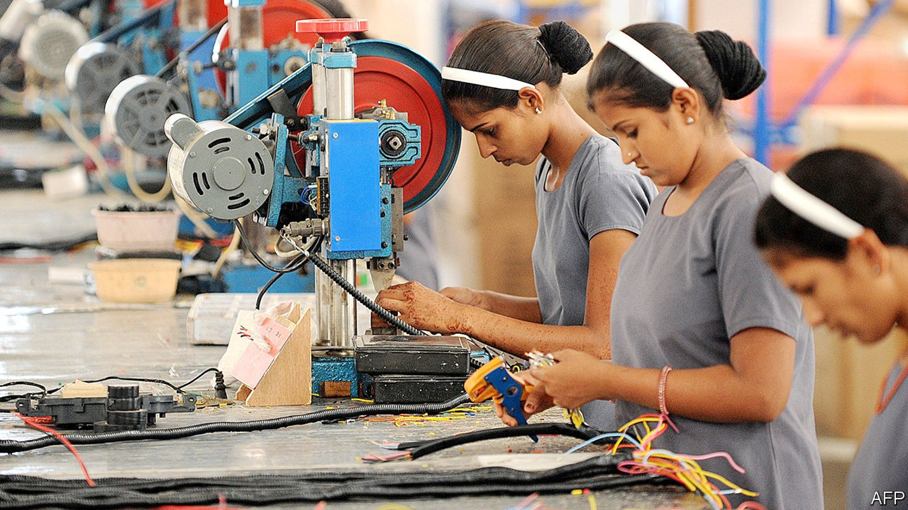
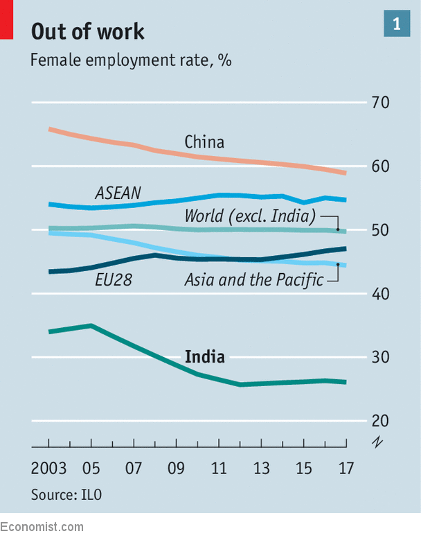
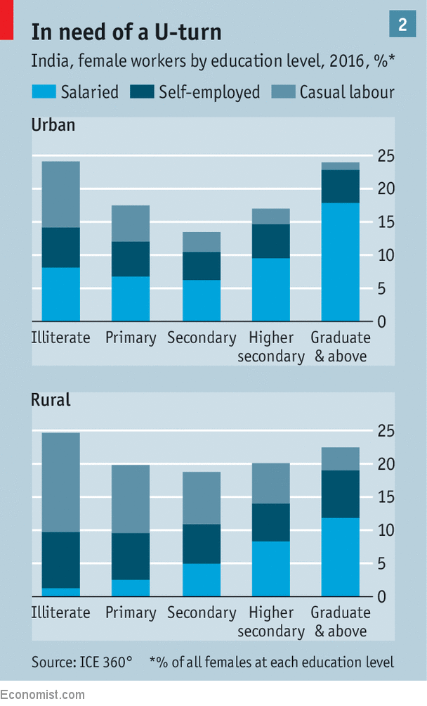
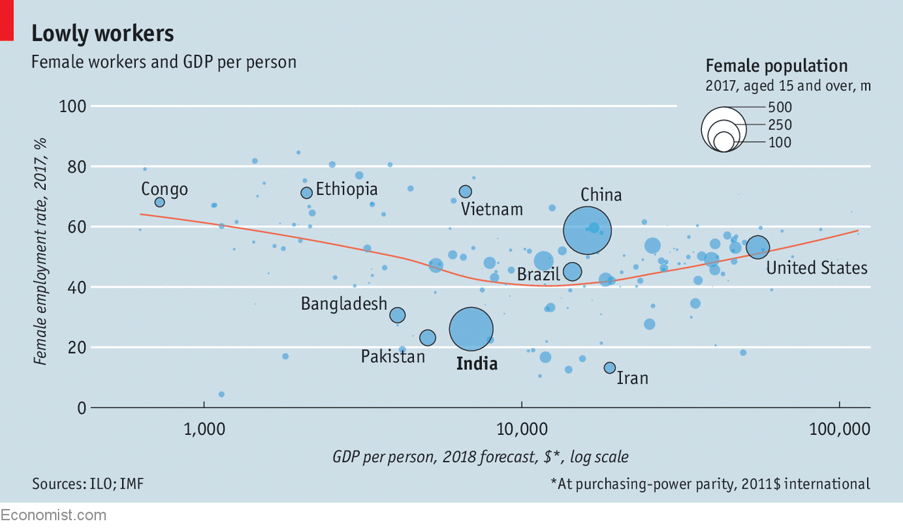
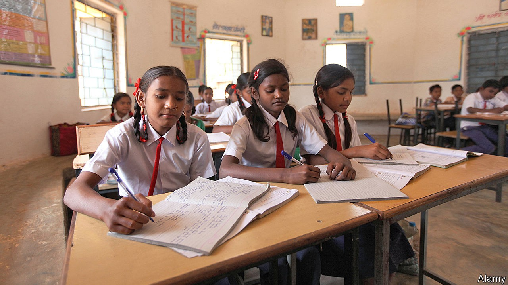
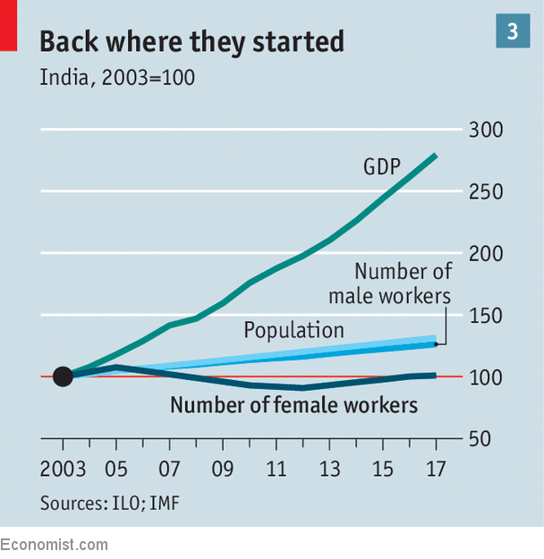

Culture and the labour market keep India’s women at home
How can they be helped to return to the workforce?

Listen to this story.Enjoy more audio and podcasts on iOS or Android.
Listen to this story
Save time by listening to our audio articles as you multitask
Neither of Kirandeep Kaur’s older sisters works. Nor do most of her girlfriends. But the 21-year-old is giving it a shot. By the summer, upon completion of a three-month nursing course, she hopes to start as a bedside assistant in a hospital in Kapurthala, a town near her village in the northern Indian state of Punjab. In a windowless classroom bedecked with medical diagrams, she and a dozen others are learning the difference between a stethoscope and an endoscope.
Ms Kaur would rather not act as a pioneer among her peers. But her father, a labourer on building sites, has heart problems, her mother is dead and her sisters live with their husbands’ families. Financial necessity and the prospect of a 5,000 rupees ($73) monthly pay cheque trumped any patriarchal hesitation her father had about her new path. After several years at home since finishing school, the putative nurse thinks she might enjoy it, too.
Everything suggests that Indian women ought to be following Ms Kaur into the workplace. The economy has grown at around 7% a year for two decades, girls are now far better educated than their mothers and fertility rates have dropped rapidly. Such dynamics sucked millions of women into the labour force in other poor countries. Excluding India the proportion of women who work worldwide is 50% (see chart 1). But in India, it has declined from 35% in 2005 to 26% today. No country has experienced such a steep decline, and from a low level to boot.

India’s bid to become a middle-income country hinges on the likes of Ms Kaur. India, soon to become the world’s most populous country, now stands at 121st out of 131 countries ranked by the International Labour Organisation (ILO) for female participation in the workforce. Across the world, some 700m more women would be working if their employment rates matched that of men. A third of those, or 235m, would be in India. Even if India had maintained the rate of 2005, that would have translated into a further 42m workers. That is not far from the number employed in all Indian manufacturing. China, whose footsteps to relative prosperity it aches to follow, has barely more men working than India. Despite a drop as workplace participation dipped for both men and women, its overall workforce is nearly 50% bigger thanks to many more women working.
What prompted the drop? Part of the fall in the number of working women is actually good news. Indian girls are staying in school longer. Research suggests that it explains perhaps a third of the decline in the participation rate, which counts all females aged 15 and above. (But a startling gender gap remains: some 49% of women between 15 and 24 years old are not in education, employment or training, compared with just 8% for boys.)
This learning spurt would be good news if girls used it to secure jobs. But a paradox of present-day India is that the more education a girl gets, the less likely she is to work, bar the few that continue their studies past school. Various studies have found a “U-shape” relationship between educational attainment and workforce participation (see chart 2).

Illiterate women, often from society’s poorest segments, have little choice but to work. Most end up doing what amounts to subsistence farming. Two-thirds of India’s population live in the countryside and agriculture accounts for over half all female employment. As family incomes rise, women get more education, but upon completing their studies are excused from drudgery in favour of tending home. This would have been the fate of Ms Kaur, who has 12 years of schooling to her name. The trend reverses only with the small number of highly educated women.
From farm to plating up
Patriarchal social mores supersede economic opportunity in a way more usually associated with Middle Eastern countries. Outside a small urban elite, the default position is for women not to work unless there is no other way for a family to make ends meet. This reflects an enduring stigma of women being seen as “having” to toil. A family’s social standing partly derives from women being able to stay at home. Such social restrictions become more rigid higher up the caste hierarchy.
The likelihood of a woman working is, in essence, inversely related to her family’s income—at a time when families are getting richer. Vast discrepancies exist between Indian states. In places where many men have migrated to cities leaving wives behind, such as in the hilly north-east of the country, female employment rates are relatively high. In places like Punjab, and in much of the populous and conservative Hindi Belt it abuts in the north of the country, the figure is below 15%.
The most marked chasm is between urban and rural areas. Women in cities are about half as likely to work as those outside them. The gap is declining only because rural women are falling out of the labour force. Between 2005 and 2012, the rural female labour-force participation rate declined from 49% to 36%. In urban areas, the figure stayed around 20%. Because India’s population is steadily migrating to cities, this gap is depressing participation. Cities have fewer farming jobs, which are among the only ones that allow women to work and to take care of children.
Even those women who want to work face plenty of obstacles. Harpreet Kaur of the Pratham Institute, the charity co-ordinating the nursing course in Kapurthala, says getting girls to sign up is the hardest part of her job. A village leader must first give permission for girls living there to be trained, which is forthcoming just half the time. Then parents are approached. Only if they agree is the potential trainee asked her opinion.
Even after training for and getting a job few stick around. Data from Rohini Pande and others at Harvard University suggest that less than 20% of the girls who finish the kind of courses offered by Pratham (as well as nursing, it offers training for beauticians) will still be working a year later. That is roughly half the figure for men doing similar courses. The most oft-cited reason for girls dropping out is family obligations.
Marriage is what nips many careers in the bud. Most girls on Pratham courses say they would like to keep working after they get married. Almost none of them do so. Many badger their parents to find a match who will allow it (nearly nine in ten marriages in India are arranged). In practice, only 10-15% get the opportunity, says Ms Kaur. “It is totally frustrating. But if the husband has a good job, the question becomes ‘why work?’”, she says. Indian women are not expected to have a job—41% of young Indians think it better if married women do not work. As the median age of marriage is 19, there is little time to experience the workplace. It does not mean a life of idleness. Women do 90% of all housework, the highest proportion in the world, soaking up over 40 hours a week.
Why do girls stay in school if they do not intend to get a job? “There is a trade-off between spending money on educating a girl or spending it on a dowry; education often means a smaller dowry or none at all,” says Anirudha Dutta, the author of “Half a Billion Rising: The Emergence of the Indian Woman”. Dowries are illegal but payments averaging 35,000 rupees remain the norm. As this represents about half a median annual income, keeping a girl in school is a cost-effective way of reducing the bill.
It does not, however, mean a girl can use her education in the workplace. Families scouting for wives for their sons are looking for their own future carers and housemates, given the tradition of brides moving into the in-laws’ family home. Most seek an educated mother for their grandchildren rather than extra income.
Indian women, like their counterparts in most of the world, are having fewer children. They have gone from having an average of four in 1990 to just over two today. But declining fertility has not had the same impact as elsewhere. Western women used the time to build careers; Indian women use it to lavish more attention on fewer kids. According to the World Values Survey, 76% of Indians agree that “when a mother works for pay, children suffer”, the highest figure outside the Middle East.
There is evidence that many women want jobs. Census data suggest 31% of stay-at-home women would work if a job were available. When opportunities exist, they are snapped up. A government make-work scheme that guarantees 100 days of paid labour a year for rural Indians has more female participants than male ones.
India’s cultural barriers to women seeking jobs will be hard to break down. And even if they are removed, some argue it is not clear the country’s labour market could provide jobs for moderately educated women. There are around 1m new entrants to the labour market every month. They are hardly overwhelmed with job offers, whatever their sex. A recent advertisement for 90,000 railway jobs attracted around 25m applicants.
Nor are female jobseekers likely to have the same chance of success as a man. In a survey in 2012 by Pew, a research outfit, 84% of Indians agreed that “when jobs are scarce, men should have more right to a job than women”. The upshot can be seen at the workshop of KR Metal Industries, a small-scale garment manufacturer in an industrial park in Lower Parel, a neighbourhood of Mumbai once known for its teeming textile mills. The scene is reminiscent of countless sweatshops across Asia. Rows of workers are silently hunched over chattering sewing machines, others are ironing or stitching buttons. With one difference: every employee is a man.
Jobs for the boys
The trend extends to nearly all parts of the economy. Less than a quarter of workers in manufacturing are women, compared with nearly half in China. In Brazil 51% of workers in the service sector are women, compared with just 19% in India. Across the world, just under three-quarters of all health-care workers are women, according to the ILO. In India the figure is under half.
Worse, as the Indian economy has grown it has shifted away from female-friendly sectors towards those where men dominate. Since 2005 agriculture has shed 35m of its 250m workers, as tractors and other types of mechanisation reduced the workforce required. Two-thirds of those displaced were women. At the same time employment in industry grew by 36m—enough to absorb all the redundant farmers, male or female. But men nabbed 90% of those jobs. Of the 56m jobs in the service sector created during the same period, men got nearly 80%. Near the top of the pay scale, hiring in the IT outsourcing industry (which is relatively female-friendly) has all but stalled as its biggest companies face pressures from automation and the prospect of resurgent protectionism.
Industries that spawned tens of millions of female jobs in other emerging economies are largely absent from India. Antiquated labour laws and a government fond of harassing big business are to blame for an absence of mega-factories spewing iPhones or T-shirts. Vietnam and Ethiopia, which have plenty of giant factories employing women, mostly making clothing and footwear, boast female workforce-participation above 70%.
Denying women access to jobs has held back India’s economy. A study cited by the IMF estimates India would be 27% richer if more women there worked. But the impact runs much deeper. The skewed labour force affects the distribution of wealth between men and women, and thus their respective roles in society.
Neither fine nor balanced
Studies show that women with their own economic resources—a piece of land, for example—are far less likely to be victims of domestic violence. And working women are more likely to control household finances. Those who do so spend more on the well-being of their children. The opening of factories where women can find jobs results in an increase in girls’ education in neighbouring districts, and even affects the amount of food they receive.
In a country with pockets of abject poverty, that can have dramatic consequences. Around 600 young girls a day die of neglect resulting from gender bias, according to a study published in the Lancet. The authorities estimate that India has 63m fewer women than it would otherwise because of differing survival rates between boys and girls as well as gender-selective abortions. Across India only 900 girls were born for every 1,000 boys in 2013-15, a ratio that is expected to worsen.

Improving the lot of women who want jobs will be a hard slog. India is hardly fertile ground for feminism. A poll of young Indians last year found over half agreeing that women should always obey their husbands. The patriarchal approach is enthusiastically endorsed by the politically dominant Hindu nationalist movement, spearheaded by Narendra Modi, the prime minister. A female functionary of the women’s wing of the Rashtriya Swayamsevak Sangh, the ideological parent of Mr Modi’s Bharatiya Janata Party, recently explained that “a man’s job is to make money…whereas a woman’s quality is motherhood. She should never forget that.”
Women’s issues receive limited political attention. A new goods-and-service tax adopted in 2017 put a levy on tampons (while exempting condoms and much else besides). All 33 of the politicians setting the tax rates were men. Only one in eight ministers or members of parliament is a woman; just two of 23 Supreme Court judges are female. The corridors of corporate power are largely men-only zones.
Labour laws that might help women, such as extended maternity leave, have limited scope given that only 5% of women work in formal salaried jobs. Similarly, although men and women should in theory get equal pay for the same work, in practice women get just 62% of what men earn. While women are meant to inherit land as easily as their brothers, few do so in practice. Less than 13% of all agricultural land is controlled by women.

Getting ready for the marriage market or job market?
Allies of Mr Modi insist that his development agenda will help all Indians but women most of all, including helping them into the labour market. Perhaps it will. A push to get gas cookers into 50m homes has exceeded targets, for example. Each cooker can cut the gathering of wood or cow-dung (still used in over half of all households, and mainly foraged by women) by up to an hour a day. A World Bank study suggests that just two hours less housework a week could bump up female employment by ten percentage points.
Women may benefit disproportionately from other schemes, such as those to improve access to bank accounts or mobile phones. Better roads and electricity connections remove obstacles to women getting jobs, studies show, and are part of the government’s infrastructure push.
Against that, public safety for women remains an oft-cited barrier for employment. Some cities, notably the capital, Delhi, are perceived as inhospitable to single women. That makes moving to find work harder for women than for men, for whom hostels are abundant. In most states, women are barred from overnight shifts at factories for safety reasons.
Optimists point out that countries have their own U-shape of female employment. Women tend to pull out of work as countries move from agriculture to manufacturing and services, but return when more of them get educated. In Turkey female employment slumped then recovered as the country urbanised. The trough of the “U” is at roughly $10,000 of GDP per head, measured at purchasing-power parity. India, which performs notably worse than countries at similar stages of development, stands at $6,500; the figure is increasing by around $400 a year. That suggests things might get worse before they get better.

The steepest fall in India’s female-participation rate was between 2005 and 2012, since when things have at least not become much worse (see chart 3). Yet the ILO forecasts that even by 2030 India will not have as many working women as it did in 2005, despite a 44% increase in its female working-age population between those dates.
The goddess of big things
The Hindu goddesses of wealth, power and learning are all women, Mr Dutta points out. But Rama Bijapurkar, a marketing consultant, argues that these are the wrong deities for ambitious Indian women to pray to. Their liberator will instead be the “Goddess EMI”. Equated monthly instalment is the name given to the loans more and more richer Indians are taking out to finance anything from mobile phones to scooters and homes.
At least among richer Indians, consumer debt is rising rapidly and with it repayments. Increasingly, says Ms Bijapurkar, a single salary is not enough to balance the bloated household budget. That presents an opportunity. For Indian families need not look far for a willing volunteer to bring in a second income. She is in the next room, dealing with a load of washing.